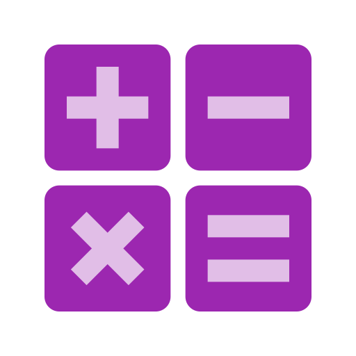

Números Primos y Compuestos
¡Aprende jugando!

Danna Gisel Pérez Rivera
• 6° Primaria
Detectando conexión...
Libro
Ver la Lección Completa
Brújula
Practicar 50 Preguntas
(¡Siempre diferentes!)
Notificación
Activar Recordatorios
Móvil
Mover el Celular
(¡Prueba los sensores!)